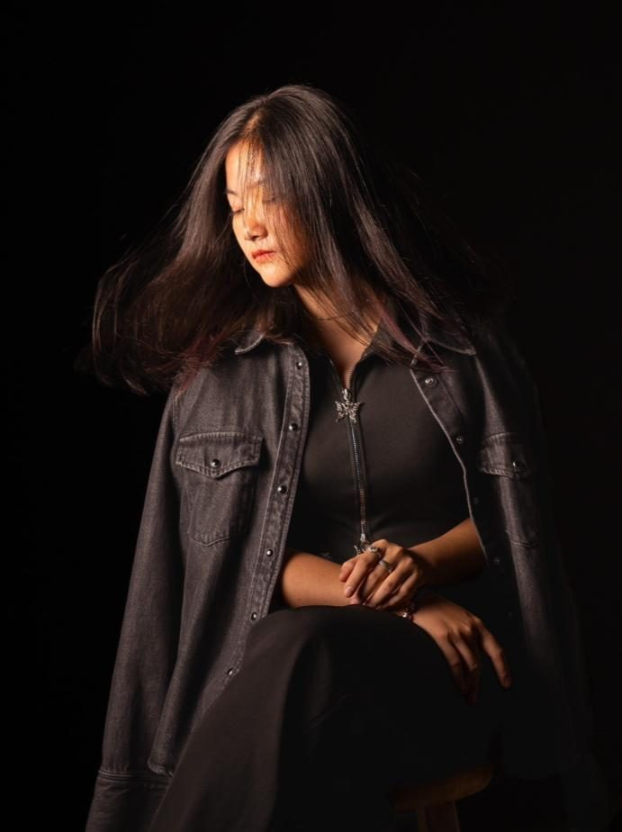

Hello
My name is Vivinne. I am a second-year undergraduate student in the Architecture Department at Tunghai University. I am a curious and highly motivated student with strong teamwork and leadership skills. I deeply admire how architecture influences people's thought processes, beliefs, and values, creating a unique identity. Since childhood, I have been fortunate to be exposed to art, which has greatly cultivated my deep interest in design. I look forward to experiencing various art cultures in the future to broaden my horizons.
我是 Vivinne，東海大學建築學系的大學二年級學生。我是一位充滿好奇心、積極進取的學生，具備良好的團隊合作與領導能力。我深深欽佩建築如何影響人們的思考方式、信念與價值觀，進而塑造出獨特的身分認同。自小我很幸運能接觸藝術，這大大培養了我對設計的濃厚興趣。我期待未來能體驗各種藝術文化，以拓展視野。
Email電子郵件 threeelegrace@gmail.com
Education學歷
- 2023 – Now2023 – 至今
- Architecture Department of Tunghai University東海大學建築學系
- 2020 – 20232020 – 2023
- Taipei First Girl High School (TFG)台北第一女子高級中學（TFG）
Competitions & Participation競賽與參與
- 20242024
- Internship in Wei & Wei International Architects & Planners於 Wei & Wei International Architects & Planners 實習
- 20232023
- High School Graduate Association – Minister of Art Department (Graduation ceremony Designer & Crafter)高中畢業生協會 – 美術部部長（畢業典禮設計與手作）
- 20222022
- 3rd Place – Taipei City Student Art Competition台北市學生美術比賽 第三名
- 20222022
- 1st Place – TFG Student Watercolor CompetitionTFG 學生水彩比賽 第一名
- 20212021
- 1st Place – TFG Student Watercolor CompetitionTFG 學生水彩比賽 第一名
- 20202020
- 1st Place – TFG Student Watercolor CompetitionTFG 學生水彩比賽 第一名
Skillsets技能
- AutoCADAutoCAD
- SketchUpSketchUp
- Rhino8Rhino8
- ProcreateProcreate
- IllustratorIllustrator
- PhotoshopPhotoshop
- FortesFortes
- Physical model making實體模型製作
- Watercolor水彩
- Sketching素描
01
Coastal Line Tales – Time Boils Water海線物語–時間煮水
Landscape Designing + Inn景觀設計＋民宿
English text on this page is a draft translation of the Chinese original, pending review. Text inside drawings stays in Chinese.
Overview概述
Four discs are placed in the farmland. The temporal quality of water is enlarged inside the discs for people to read, while also providing a resting place for farmers.
在農地中置入四個圓盤，將水的時間性在盤中被放大呈現、供人閱讀，同時提供農人休憩的空間。
Design Concept設計概念
Enlarge the water-diverting objects and amplify the overflow of water, creating on the farmland a new layer of field texture that can store water for irrigation and make time readable.
擴大引水物件，放大水的溢流，在田地上創造能夠儲水灌溉且閱讀時間的新一層農田紋理。
Key facts重點
- Site基地選址
- Tanwen Station, in the middle of the fields, Miaoli苗栗談文車站田中央
- Programme機能說明
- Inn, public toilet, dining space, tea house民宿、公共廁所、用餐空間、茶屋
- Objects物件選擇
- Water-diverting objects, tool huts引水物件、工具小屋
- Keywords關鍵字
- Temporality, farmland texture時間性、農地紋理
Process流程
- 1Observe the site + find objects觀察基地 + 找尋物件
- 2Translate objects + develop the concept物件轉譯 + 概念發展
- 3Merge concepts + develop the design概念融合 + 設計發展
- 4Consolidate the statement + final presentation統合說明 + 期末呈現
01
Site Condition — Fine Water Texture基地現況－水細紋理
After the government’s land readjustment in the 1980s, Tanwen’s scattered fields were reorganised into 100-metre units. Each group of fields has an irrigation channel, and a drainage channel runs along the road.
談文在民國70年代經歷政府的重劃後，從凌亂的田地整理成以100公尺為單位、一組田中有引水的水溝，臨路則是排水水溝。
Every farming household has to draw water, but because different crops need water differently, each adds boards, pipes and pumps to its own field, giving Tanwen’s field water system many different appearances.
農業居民皆須引水，但因不同作物的取水需求，各自在田地上增加擋板、水管、抽水馬達，構成談文田地水系統的不同樣貌。
Water no longer simply flows from the irrigation channel into the field and then out into the drainage channel. Overflow, diversion and pumping at the drainage point have appeared as new field textures, forming a new landscape.
水的流動不再只是由引水水溝到田裡，再從田排出至排水水溝，而是出現溢流、分流，排水處抽水等新的田地紋理，構成新的地景。
Water in four phases: diversion → seepage, full → gathering, drainage → splitting, dry → stillness. Rows, top to bottom: flow imagination, field imagery, Provincial Highway 1 imagery.
水的四個時期：引水期→滲透、滿水期→聚集、排水期→分流、乾水期→靜止。由上而下：漫流想像、田地意象、台一線意象。
02
Site Condition — Temporality基地現況－時間性
Hut — summer plants form the roof // dried-up winter vegetation, the roof disappears
小屋 -- 夏季植物構成屋頂 // 冬季乾枯屋頂消失
Hut — summer plants form the roof // dried-up winter vegetation, the roof disappears
小屋 -- 夏季植物構成屋頂 // 冬季乾枯屋頂消失
Hut — damaged by time // objects added
小屋 -- 因時間破損 // 增加物件
03
Object — Water-Diverting Objects物件－引水物件
Farmers place their own water-diverting objects in their fields — boards, straw, plastic bottles, stones and so on — to make the paddies store water and overflow, and in turn they change the look of Tanwen’s paddy fields.
農民在各自田地置入自家的引水物件，如木板、稻草、寶特瓶、石塊等，製造水田儲水、溢流，進而改變了談文的水田樣貌。
04
Object — Tool Hut物件－工具小屋
The huts cling to the fields and carry a sense of time. They are small spaces where farmers keep their tools, made of a frame, a skin and a roof plate.
小屋有著對於田地的附著與時間性，這是農人拿來放置工具的小空間，由框架、皮層與頂板構成。
The huts are built from materials that are easy to get at hand, but they change appearance as time passes — a support is added, the canvas tears, and plants even grow and wither on them.
小屋使用容易隨手取得的材料構成，但也因時間流逝而改變樣貌，如加上支撐、帆布破損，甚至是植物長出與枯萎。
05
Site Selection基地選址
This field was chosen because its own water texture is the richest: its water moves in slopes, circulation, overflow and drainage.
基地選址於這一片田，是因為此田地本身擁有的水紋理變化是最為豐富的，擁有傾斜、循環、溢流、排出的水流變化。
The order follows function. The public toilet is closest to the station and the most public function; next come the dining space, from which the fields can be watched, and the inn; last is the tea house, reached after a long walkway.
根據機能去訂定順序。公共廁所離車站最近、屬於高度公眾化的機能，再來是可以觀看田地的用餐空間、民宿，以及經過長的走道後的茶屋。
06
Design Operation設計操作
I placed four large discs in the field. These discs put the water into “controllable” and “uncontrollable” states.
我在田地上置入四個大的盤子。這些盤子對水進行【可控】和【不可控】的狀態。
Each tier of a disc is 18 cm high and 50 cm wide, cast in concrete. The original water channel passes beneath the disc and feeds it with water.
圓盤每一層高18公分、寬50公分，由混凝土灌製而成。原先的水道會經過圓盤下方，替圓盤注入水源。
When a large amount of irrigation water is needed, the opening at the sixth tier is blocked so that water accumulates in the disc and the stored volume rises, which makes irrigation more efficient than with the original small pipes.
在需要大量灌溉水的時候，將第六層的開口擋住，藉此控制水堆積在圓盤中，使儲水量上升，在灌溉時就能夠比原先的小水管有更高的效率。
When the water reaches the ninth tier it is forced to overflow, so the water level in a disc stays at the height of the ninth tier at most.
當水上升到第九層時，會被迫溢流而出，使圓盤中的水位最高維持在第九層的高度。
This affects the walking space of people in the two discs behind. People can therefore watch the height of the water level and come to understand temporality further.
這會影響到後面兩個盤子中人的行走空間。因此人們可以觀看盤子水位的高度，進一步去了解時間性。
07
Programme Layout機能配置
The toilet faces the station, hinting that the facilities exist.
廁所與車站對望，暗示機能存在。
The dining space tries to create the feeling of an auditorium: looking down, one watches the fields and the farmers at work, as if watching a performance. A large pergola on the roof is planted with vines, which over time give shade, wither, and leave the space roofless again.
用餐空間試圖創造觀眾席的感覺，向下可以觀看田地與農人的狀態，如同觀賞一場表演。屋頂做了一個大棚架，在上面種植藤類植物，隨著時間推移會產生遮蔭、枯萎又變成無頂的狀態。
The inn’s volumes borrow the hut’s idea of light attachment and sit on top of a disc. From a room one sees the fields directly outward and the changing water level toward the centre.
民宿區的量體利用小屋輕盈附著的概念，被放置在圓盤上。在房間內可以向外側直接看見田地、向中心看見水位變化。
The tea house has two plates that can be moved, following the changing path of the sun to give shade. This last disc is also deformed, so the views seen outward through the gaps differ again.
茶屋有兩層板可以去移動，可以跟著時間變化下陽光途徑改變去遮陽。這個最後的盤子也進行變形，縫隙間向外看見的景色又不同了。
08
Spatial Experience空間體驗
Set in the fields, the discs give visitors something to read, and their own shadows, like an extended function of the huts, shade farmers at rest. Because the space is open, it blends naturally into the activity here. The sunset is reflected on the water, and when it rains the water rises and ripples; once the dining space’s pergola is overgrown, birds may nest in it, and even frogs and fireflies may come. The steps let people sit, stand, or even lie down to watch the stars, and through different angles and gaps they keep observing Tanwen.
這些盤子置於田地之中，除了帶給外來的人閱讀的體驗，本身的陰影也如同小屋衍伸的功能一般，提供農人休憩的遮陽。因為是開放的空間，因此自然會更加融入這裡的活動。夕陽可以倒映在水面上，下雨時水會上漲、產生水波；用餐空間的棚架在長出植物後，可能會有鳥來築巢、甚至青蛙、螢火蟲。階梯可以讓人坐著、站著，甚至躺下來觀星，透過不同的角度和縫隙，不斷觀察談文。
Standing in a disc, half the view is steps and water and the other half is sky; Tanwen’s character is condensed into different heights, letting us understand the place in a simpler way. The person in the disc seems to become water too: watching water flow in from the channel, gather and overflow, then the figures of farmers at work, and finally the water disappear.
站在盤子裡，視野有一半是階梯和水，另一半是天空，談文的特色濃縮成不同高度，使我們用更簡單的方式理解這裡。盤中的人好像也成為了水，看見水從水溝流進，再從水溝觀察到聚集、溢流，再到農人耕作的身影，又看見水的消失。
09
Design Summary設計總結
Reading the texture of the land is the way closest to the land. The overflow of water here fully shows Tanwen’s unique texture, so I drew control, attachment and temporality from the earlier objects, created a landscape that amplifies the overflow of water, and in turn produced the next layer of paddy-field texture, while giving farmers a place to store water and rest.
閱讀土地紋理是最為貼近土地的方式，這裡水的溢流變化充分展現談文獨有的紋理特色，因此從先前的物件中提取控制、依附與時間性，並創造地景、放大水的溢流，再產生下一層新的水田紋理，同時提供農人儲水與休憩。
10
Basic Drawings — Plans基本圖面－平面圖
11
Basic Drawings — Sections基本圖面－剖面圖
12
Site PlanSite Plan
13
Models模型
02
Blessing, Island and Home祝福、島嶼與家
Florist + Café + Residence花藝＋咖啡＋住宅
Overview and Design Concept are the portfolio’s original English. The section texts below are draft translations of the Chinese originals, pending review. Text inside drawings stays in Chinese.
Overview概述
This is a three-generation residence that integrates a florist and a café. It created balconies and double-height spaces by varying angles. A curved wall transitions from commercial to residential areas. The florist serves as a multifunctional space for storage, display, and studio, whereas the café incorporates a sunken plaza for spatial continuity.
這是一座三代同堂的住宅，整合了花店與咖啡館。透過變化角度，形成陽台與挑高空間。一道曲牆從商業區域過渡到住宅區域。花店兼具儲藏、展示與工作室的多功能空間，咖啡館則納入下沉廣場，以維持空間的連續性。
Design Concept設計概念
The design is guided by symbolism. The flower shop represents “departing with blessings,” while the café serves as “an island in daily life,” offering a retreat-like ambiance. A corridor and sunken plaza enhance the sense of arrival, while the residence prioritizes “relaxation” through abundant natural light and seamless indoor-outdoor connections via balconies and courtyards.
設計以象徵意涵為導向。花店象徵「帶著祝福出發」，咖啡館則是「日常中的一座島」，營造出宛如歇息之所的氛圍。走廊與下沉廣場強化了抵達感，住宅則以「放鬆」為優先，透過充足的自然採光，以及經由陽台與中庭達成的無縫室內外連結來實現。
Key facts重點
- Course課程
- 113-1 · Year 2, first semester, second design project113-1 · 二年級上學期第二次設計
- Site基地
- Changhua City; an L-shaped lot facing two roads and a narrow alley彰化市區；L 型基地，面對兩條馬路與細長巷弄
- Programme機能
- Florist + Café + Residence花藝＋咖啡＋住宅
- Strategy策略
- A shopfront at each end of the L; a curved wall that folds back and divides guest and homeL 型兩端各為店舖入口；曲牆回勾，界定客用與自宅空間
Contents目錄11
- 01
- 02
- 03
- 04
- 05
- 06
- 07
- 08
- 09
- 10
- 11
01
Site基地說明
Located in the urban area of Changhua City, near Changhua Girls’ High School (彰女), a police station, the former residence of Yang Quan (楊全故居) and so on. The site is L-shaped and faces two roads and a long, narrow alley. The vacant lots to the north and south are currently enclosed by corrugated-metal hoarding; neither has a building on it.
位於彰化市區，附近有彰女、警察局、楊全故居等。基地是一個L型，分辨面對兩條馬路以及細長的巷弄。目前南北兩側的空地有鐵皮圍繞，但北邊、南邊目前無建物。
Site impressions
基地感受
Plenty of light
Crowded to the west, open to the north
Connected to the outside on the east and south
光線充足
西側擁擠、北側寬敞
東側及南側對外連結
Site characteristics
基地特徵
Two ends of the L → low privacy, noisy with people and cars
Centre of the L → comfortable, spacious, quiet
L型兩端 ＞ 隱私低 / 人車嘈雜
L型中心 ＞ 舒適、寬敞、寧靜
“People walk only to reach the next destination.” → create shops that give meaning.
「人們走路只是為了去下一個目的地。」＞＞＞ 創造能賦予意義的店鋪
North-west: the back of the police station, few people / North: an empty lot, buildings far away, keeping light and sky / South: a large empty lot / West: a narrow alley (< 2 m)
西北側為警局背面，人煙稀少／北側有空地，房屋距離遠，保留光線與天空／南側空地大／西側巷弄狹窄（< 2m）
02
Formation Strategy形成策略
Florist → a place to leave with blessings
→ flowers = blessings → a place that stores blessings (passing through is itself one of the steps of a blessing)
花店 ＞ 帶著祝福離開的地方
＞ 花 = 祝福 ＞ 儲藏祝福的地方（經過的本身即是祝福的其中一種步驟）
Café → a brief landing on shore → a different environment
咖啡廳 ＞ 短暫的上岸 ＞ 不同的環境
The shops use the two ends of the L, where foot and vehicle traffic is heaviest, as the entrances of the florist and the café respectively.
店舖以人車流量較大的L型兩端，分別作為花店與咖啡廳的出入口。
The florist is entered by a ramp down to a semi-basement flower-storage space, which also serves for choosing plants and as a workspace. The café is approached through a sunken plaza as a transition — like an inverted island, a relay point in the drifting sea of the mundane world.
花店以斜坡進入半地下的花材儲藏空間，同時作為植栽挑選與工作空間；咖啡廳以下沉式廣場為過渡，如同一座相反的島嶼，中繼於塵世浮海。
03
Response Strategy回應策略
The residence’s curved wall hooks back to strengthen its power of definition. Floors 1F–2F sit inside the wall and 2F–3F on its inner side, linking the viewing route and the band-practice room at the junction, building a connection with the courtyard, and defining the guest area and the home area, so that the outer wall encloses inward, concentrating and opening toward the inside.
住宅曲牆回勾，強化界定的力量，1F – 2F 位於牆內部、2F – 3F 位於牆內側，串連起觀景路徑、交界的練團室、建立與中庭的連結，並界定客用空間、自宅空間，使外牆向內圍塑集中、向內的開放
Angles create balconies and double-height spaces. The sunken plaza and the entrance corridor of the florist are both transitions from outside to inside. The shops meet at the centre as the zone where people interact with each other and with objects.
透過角度創造出陽台、挑空的空間；下沉廣場、花店入口長廊，皆是由外而內的過度 ；店鋪在中心交會，作為人與人、人與物品之互動區域。
04
Development Process發展過程
Form trials
嘗試形體
Spatial adjustments
空間調整
05
Floor Plans平面圖
06
Elevations立面圖
North elevation
北向立面圖
East elevation
東向立面圖
South elevation
南向立面圖
West elevation
西向立面圖
07
Sections剖面圖
AA section
AA剖面圖
BB section
BB剖面圖
08
ISO / Site PlanISO／Site Plan
Left: isometric view · right: site plan
左：等角圖．右：Site Plan
09
Wall Section大牆剖面圖
10
Model, 1:50正模（1:50）
11
Spatial Scenes空間場景照
03
Embedment and Disengagement - I鑲嵌與脫開 - I
Vertical Space Design + Gallery垂直的居所＋藝廊
Overview and Design Concept are the portfolio’s original English. The section texts below are draft translations of the Chinese originals, pending review. Text inside drawings stays in Chinese.
Overview概述
This is a gallery designed for guitarists, featuring a live house, studio, saloon, and living room. The different altitudes of the building lot are utilized to create an auditorium, allowing the sound from the live house to resonate throughout the entire building via the patio.
這是一座為吉他手設計的藝廊，包含展演空間、工作室、交誼廳與客廳。善用基地的高低差形成觀眾席，使展演空間的聲音能經由天井迴盪於整棟建築。
Design Concept設計概念
The design concept centers on the interplay of embedment and separation between spaces. By transforming the gaps between separated blocks into walls, a patio is created that allows music from the first floor to permeate the entire building, connecting the various levels.
設計概念以空間之間「鑲嵌」與「脫開」的交互作用為核心。將分離量體之間的縫隙轉化為牆，形成天井，讓一樓的音樂得以滲透整棟建築，並串連各個樓層。
Key facts重點
- Course課程
- 112-2 · Year 1, second semester, second design project112-2 · 一年級下學期第二次設計
- Theme主題
- Embedment and disengagement, continued from the previous project鑲嵌與脫開（延續上一次設計）
- Programme機能
- Gallery · owner’s living space · social space + studio藝廊展覽空間・主人起居空間・交誼空間＋工作室
- Limits限制
- Floor area ≤ 150 m², 3–4 storeys, no higher than the seven-storey house to the east總樓地板面積 150 m² 以內，3–4 層，不得超過東邊七層樓高的房子
Contents目錄11
- 01
- 02
- 03
- 04
- 05
- 06
- 07
- 08
- 09
- 10
- 11
01
Brief — Vertical Residence + Gallery題目－垂直居所＋藝廊
Besides the basic A. gallery exhibition space (a toilet is allowed), the programme includes:
B. a living space for the owner (the main collector), with bedroom and bathroom;
C. a social space + studio for the owner.
本案的內容與機能除了最基本的 A. 藝廊展覽空間 外 (可有廁間)。也包含：
B. 一個主人起居空間 (主要收藏家)含寢室、衛浴。
C. 一個主人的交誼空間＋工作室。
The gallery (Pavilion) is used and managed by the collector. Its public space offers exhibitions and salons and is open to the public, balancing the collector’s own needs with meetings and receiving guests. Further needs may be added and arranged reasonably within the prescribed floor area, according to one’s own analysis and proposition. The vertical relationship between floors must be one of the design conditions of the space; it can be combined with the design concept to respond to the site or to the flow of people. The roof and terrace must be considered as lookout or resting points.
藝廊(Pavilion)的使用與管理者為收藏家。公共空間平時提供展覽與沙龍，並對外開放，兼顧收藏家使用需求及提供洽談與會客。其餘需求可依據自己分析與命題在規定的樓地板面積內進行合理的增加與安排。整體空間須有高層關係作為空間中的設計條件之一，可以與設計概念相結合對場地或者人流做回應，屋頂與露台作為瞭望或休憩點必須被考慮進去設計。
The ground floor may be lifted, but no basement may be dug; site grading and the treatment of trees on the site may be done only after discussion with the instructor. The building may have 3–4 storeys and may not exceed the height of the seven-storey house to the east; split levels or mezzanines are allowed (to be explained clearly in drawings and models). The separation of indoors and outdoors must be considered and discussed with the instructor. The design may not go beyond the building line; the total floor area is within 150 m², not counting outdoor circulation (including open-air stairs), landscape, courtyards and light wells.
可挑空底層但不可挖地下室，整地以及處理基地上的樹木景觀須與指導老師討論才可進行。整體樓層可在3~4層之間，最高不可超過東邊七層樓高的房子，可作複層或夾層 (需用圖模交代清楚)，須考慮室內外的分隔，必須與指導老師討論。設計不得超出建築線，總樓地板面積 150 m² 以內，室外動線(含露天樓梯)景觀以及中庭、天井等不計入。
02
Initial Ideas發想
Last time I took “embedment and disengagement” as my theme, and this time I decided to continue with the same concept. The objects I showed in the previous stage were an electric guitar and performance, so I hoped to embed the whole space through performance, and also wanted to try embedding the spaces themselves into one another.
上一次我以「鑲嵌與脫開」作為主題，這一次我決定延用這樣的概念。前一階段我展示的物品是電吉他以及表演，因此希望藉由表演鑲嵌起整個空間，也想嘗試空間本身之間的鑲嵌。
From the very first concept model I tried to embed two spaces into each other, wedging them together, and to use the space between them as a light well running through the whole; but the space turned out too small and was not used well.
從一開始概念模就試圖將兩個空間鑲嵌、卡在一起，並把中間的空間作為天井，貫穿整體；但出現了空間太小、沒有好好利用的問題。
03
Case Study Attempt案例嘗試
In the case study during the process — Takatsuki House (高槻之家) — the architect cut the rectangular space at 45° to create corner spaces and increase usable area. I tried to gain space with the 45° method, but because the floor area was too small I could not achieve the same effect.
在過程中的案例分析 － 高槻之家中，建築師將長方形的空間用四十五度角的方式去切分出角隅空間，增加空間使用。我試圖用四十五度角的方法增加空間，但因為樓板面積太小所以無法達到同樣的效果。
04
Rebuilding the Concept概念重建
After rethinking, I first embedded the blocks and then disengaged them, and also made the corridors created by the disengagement. In these corridors I saw a new spatial relationship, so I turned the gaps into walls and began to extend them.
重新思考過後，我先鑲嵌塊體，再將其脫開，並把脫開的走道也製作出來。從這些走道裡面我看到了新的空間關係，所以我把空隙轉化為牆面，並開始延伸。
05
Floor Plans平面圖
06
Elevations立面圖
While working on the elevations I tried to create a contrast between the front and back elevations. The front elevation is simple and flat; although it faces the road, it is strongly enclosed. After entering the corridor and reaching the rear, the back elevation shows many layers and feels transparent and open.
在整理立面時，我試圖創造正背立面的反差感。正立面簡單平整，雖然面對馬路，但包覆性強；進入走道來到後方後，在背立面上出現了很多層次，顯得通透和開放。
Left: front elevation · right: back elevation
左：正立面圖．右：背立面圖
07
Sections剖面圖
AA′, BB′ and CC′ sections
AA′、BB′、CC′ 剖面圖
08
Site Plan基地配置圖
09
Explanatory Diagram and Spatial Description說明圖與空間說明
First floor
一樓
The first floor is the main performance level. The corridor on the right is how performers reach the performance position and the studio; the corridor on the left is the main circulation: first up to the viewing platform at the back, then along the corridor into the second-floor lounge.
一樓為主要表演層，右側走道是表演者進入表演位置以及工作室；左側走到為主要動線。先是上到後方觀賞平台，接著沿著走道進入二樓交誼廳。
Second and third floors
二、三樓
For the performers, the second and third floors are resting and social spaces; they are split into two levels because the space is not big enough. They also let performers see how the audience is entering for the first-floor performance. In a limited space, the building area is not spread out horizontally but stacked upward, while still meeting the needs that horizontal spreading would otherwise serve.
二樓與三樓對於演出人員來說是休息交誼的空間，因為空間不夠大所以分成兩層。同時有需要可以了解一樓展演觀眾入場狀況，在有限的空間裡不用水平展開建築的面積，而是透過向上堆疊，同時還能兼顧到水平展開佔地才能做到的需求。
The third floor has a guest toilet; it is connected to the second-floor lounge and the two look at each other; the rear stairs lead into my living room.
三樓有客用洗手間；與二樓的交誼廳是有連結、互相觀看；後方樓梯則是進入我的起居室。
Fourth floor
四樓
The living room on the fourth floor mainly aims to bring in daylight, because I love my private space to have bright natural light. Besides a full glass window on the west-facing corridor, there are also windows beside the desk and the bed to increase daylight.
四樓的起居室主要想將採光納入，因為我很喜歡自己的私人空間有明亮的自然光。除了面西向的走道有一整片玻璃窗以外，在書桌與床旁邊也有玻璃窗，增加採光。
10
Model, 1:30正模（1:30）
11
Model, 1:50正模（1:50）
The overall space is disengaged into three parts: the first-floor performance space, the second- and third-floor resting lounge, and the fourth-floor private space, and the whole building is embedded together through the light well.
整體的空間脫開成三個部分：一樓展演空間、二三樓休息交誼廳、四樓私人空間，並藉由天井鑲嵌整個建築物。
04
Embedment and Disengagement - II鑲嵌與脫開 - II
Horizontal Space Design + Gallery水平空間設計＋藝廊
Overview and Design Concept are the portfolio’s original English. The section texts below are draft translations of the Chinese originals, pending review. Text inside drawings stays in Chinese.
Overview概述
By utilizing the separation of lines, the recession of walls, the incorporation of space beneath stairs, and the connection between the left and right sides, columns, and varying ceiling heights, the distinct areas of the saloon, studio, and live house are defined.
藉由線條的分離、牆面的退縮、樓梯下方空間的納入，以及左右兩側的連結、柱子與高低變化的天花板，界定出交誼廳、工作室與展演空間等不同區域。
Design Concept設計概念
Longitudinal walls and extended openings guide sightlines and movement, leading from the saloon to the live house, and then from the live house to the studio. Each space offers a visual connection to another, though direct access is not always possible. The overall design ensures that no areas are distinctly enclosed.
縱向牆面與延伸的開口引導視線與動線，由交誼廳通往展演空間，再由展演空間通往工作室。每個空間都與另一個空間有視覺上的連結，但並非總是能直接到達。整體設計確保沒有任何區域被明確地封閉。
Key facts重點
- Course課程
- 112-2 · Year 1, second semester, first design project112-2 · 一年級下學期第一次設計
- Theme主題
- Embedment and disengagement (鑲嵌與脫開)鑲嵌與脫開
- Brief題目
- Treasure Box (210 × 210 × 210 cm) → Personal Studio (4.5 × 15 m slab)百寶箱（210 × 210 × 210 cm）→ 個人工作室（4.5 × 15 m 樓板）
- Site基地
- 20 × 20 m corner lot on a 10% slope20 × 20 m 轉角基地，坡度 10%
- Spaces空間
- Lounge, studio, performance space交誼廳、工作室、展演空間
Contents目錄13
- 01
- 02
- 03
- 04
- 05
- 06
- 07
- 08
- 09
- 10
- 11
- 12
- 13
01
Brief題目
Treasure Box
百寶箱
Starting from a 210 × 210 × 210 cm cube, make your treasure box within that volume.
由 210 * 210 * 210 cm 的立方體出發， 在該範圍內製作你的百寶箱。
An ambiguous scale between an object and a room; it can also be seen as a personal museum made of furniture, storing and displaying one’s own hobby collection.
介於物件與房間之間的曖昧尺度，也可視為一座由傢俱構成的個人博物館，存放並展示自己的嗜好蒐藏。
My Personal Studio (Stage 1)
我的個人工作室（第一階段）
On a floor slab measuring 4.5 × 15 m, build your personal studio. It must include the following elements:
在長、寬為 4.5 * 15 m 的樓板上建構你的個人工作室。必須包含以下元素：
1. Column row: four pairs of 320 × 40 × 40 cm columns forming three bays. The longitudinal column spacing must be equal; the transverse spans may differ, but the columns must be arranged in pairs forming column rows, with spans no larger than 6 m.
1. 柱列：以四對 320 * 40 * 40 cm 的柱子構成三個開間，縱向柱距必須均等，橫向跨距可有差異，但必須兩兩成對排成柱列，跨距不得大於 6 m 。
2. Standing walls: three walls, 240 cm high, with a total length not exceeding 23 m. Openings of any size are allowed, but a wall may not be broken apart and oblique angles should be avoided. The distance between wall and column must not be less than 15 cm.
2. 立牆：三道牆，高 240 m ，總長不得超過23米。可以開洞，大小不限，唯牆面不可斷開，並且避免形成斜角。牆面與柱間距不得小於 15 cm 。
My Personal Studio (Stage 2)
我的個人工作室（第二階段）
Space programme: use the space between the personal museum and the roof as a mezzanine, the top of the museum as the bedroom, and provide a public gallery passing through the interior and exterior of the house.
空間計畫：以個人博物館與屋頂之間的空間作為夾層，博物館頂部作為臥室，並設置穿往屋內外的公共藝廊。
1. Roof: 4.5 × 15 m in plan, a 25 cm flat slab without beams, 320 cm clear height, including one opening of 6 m². The roof parapet is 15 cm high, set back 30 cm from the roof edge. An additional 2.4 m-high roof projection serves as a rain shelter.
1. 屋頂：平面 4.5 * 15 m ，厚 25 cm 的無樑板、淨高 320 cm ，包含一個面積為 6 m2 的開口。屋頂女兒牆高 15 cm ，自屋頂邊緣退縮 30 cm 。另設一 2.4 m 高的屋突作為雨遮。
2. Stairs: 20 steps leading up to the roof; they may be straight, scissor, wrap-around, etc., but avoid curved spiral stairs.
2. 階梯：通往屋頂的 20 階梯，可以是直通梯、剪刀梯、環繞式等，但避免曲面的迴旋梯。
3. The original elements are adjusted as follows: the square columns become 30 × 30 cm and their bodies may extend beyond the slab; the total wall length must be between 17 and 23 m.
3. 原有元素進行下列調整：方柱寬度改為 30 * 30 cm ，其體可超出樓板範圍，且牆體之總和須介於 17 – 23 m 之間。
4. The site is at a corner of a six-metre-wide suburban road with roads on two sides: a gently sloping 20 × 20 m (400 m²) plot with a 10% gradient and a 2 m-wide pavement between it and the road. The neighbouring plots on both sides are also detached suburban house sites.
4. 基地位於雙面臨路的六米寬郊區道路轉角，為 20 * 20 m（400 m2）的平緩坡地，坡度為 10 %，與馬路之間設有 2 m 寬的人行道。兩側的鄰近基地也是他人的獨棟郊區住宅用地。
02
Treasure Box百寶箱
Because I love band music, after I learned the electric guitar it became an inseparable part of my life.
因為熱愛樂團音樂，學起了電吉他後，吉他成為我生活中密不可分的一部分。
I wanted to use the treasure box to store the electric guitar, and also as a small private space for performing seated or standing, or for practising.
我想將百寶箱拿來收藏電吉他，同時也可以作為坐著、站著表演，抑或是練習的小小私人空間。
The outer frame of the box displays the guitar; inside, steps of different heights let me practise seated, edit and re-record audio and video files, or lie down to rest.
百寶箱外面方框展示吉他、內部高低不同的台階，可以坐著練習、編輯翻錄的影音檔，亦可躺著休息。
03
Design Process設計過程
From left to right is the early development of the design. Through the guidance of the column row and the disengagement of the walls into continuity, people are led forward.
由左到右為設計的前期發展過程。透過柱列的引導、牆體的脫開予連續，引導人往前進。
After adding the stairs, I chose to place them in the middle of the disengaged walls.
加入樓梯後，我選擇將其置於脫開的牆體中間。
In the later development I found that a single row of columns in relation to a wall was enough to make a long corridor, and because of structural problems the column spacing was widened and the columns were placed on both sides of the studio.
後期的發展中，發現單純的一排柱子與牆面關係即可作為長廊，也因為結構問題將柱間距拉開，設置在工作室兩側。
04
Isometric View等角透視圖
The main circulation starts from the entrance at the top-left corner. Seeing the two columns at the entrance, one walks forward; the long openings in the wall lead people on into the display space of the treasure box, where one can reach the platform or the space under the stairs. Finally, through this 50 cm-wide passage one enters my studio. I did not want to close off my studio, but at the same time I did not want so many people walking through.
主要動線由左上角的入口開始，接著看到入口的兩個柱子便會往前走、牆上長向的洞引導人往前、進入百寶箱的展示空間，可以到台座或是梯下空間。最後可以透過這個50公分寬的走道進入我的工作室。我沒有想要封閉我的工作室，但同時不希望那麼多人走動。
Every space can see another space, but not necessarily reach it directly. The whole has no part that is particularly closed off.
每一個空間都可以看到另一個空間、但不一定可以直接接觸。可以看到整體是沒有任何特別封閉的部分的。
05
Spatial Sequence空間序列
From the stairs one can also see the treasure box, and from the ceiling too. From these two routes it can be seen that the treasure box is where lines of sight and circulation meet.
在樓梯上也可以看到百寶箱、天花板上也可以。從上述兩條動線可以看到，百寶箱是視線與動線交匯的地方。
Next I will explain my walls. They separate the studio from the lounge, the performance space from the studio, and the lounge from the performance space. Some horizontal openings are hints and some can be seen straight through; besides guiding the line of sight to draw people forward, they also hint at the existence of other spaces.
接下來說明我的牆面。他們分別區分工作室與交誼廳、展演空間與工作室、以及交誼廳和展演空間。水平的洞有些作為暗示、有些可以直接看透，除了視線的引導使人往前走外，也暗示了別的空間的存在。
06
Spatial Composition空間構成
I divided the studio into a lounge, a studio and a performance space.
我把工作室劃分成交誼廳、工作室與展演空間。
In designing the whole long space, I used the disengagement of lines, the recession of walls, the space under the stairs created by adding stairs, the connection between left and right, the column row, and the differences in ceiling height to divide three spaces.
在設計整個長向空間時，我利用線的脫開、牆的退縮、加入樓梯產生梯下空間以及串連左右、柱列、以及天花板的高差，來劃分出三個空間。
07
Site Plan基地配置圖
08
Site Section基地剖面圖
Extending to the site, I wanted the lounge to have a courtyard for socialising, so I placed the entrance at the top-left corner; then, in front of the treasure box where performances can happen, a change in level appears that can serve as a stage; and a long wall added between the studio and the performance space separates the two.
延伸到基地，我希望在交誼廳有一個可以交流的庭院，因此把入口設置在左上角的地方；接著在百寶箱正面可以表演的地方，就出現了高低落差，可以作為表演的舞台；在工作室和展演空間中間加上一道長牆，把兩個空間區隔開來。
09
Floor Plan平面配置圖
10
Elevations立面圖
11
Sections剖面圖
12
Model, 1:30正模（1:30）
Long walls and long openings guide the lines of sight and circulation: from the lounge toward the performance space, and then from the performance space to the personal studio.
藉由長向牆面與長向的開洞作為視線與動線的引導，從交誼聽走向展演空間，再從展演空間移動至個人工作室。
13
Model, 1:50正模（1:50）
The column row and the site’s eucalyptus trees form another long corridor, which also serves as a courtyard for socialising. Because of the orientation it is rather dim when you first enter the site, and bright light appears only at the performance space.
柱列與基地的大葉桉形成了另一個長廊，同時作為交誼的庭院，因方位關係，剛進入基地時較為昏暗；一直至展演空間，則有明亮光線。
05
Listening to the Body聽見身體
Assistive Device Designing從物件到義肢／輔具
Overview and Design Concept are the portfolio’s original English. The section texts below are draft translations of the Chinese originals, pending review. Text inside drawings stays in Chinese.
Overview概述
This assistive device emits a sound in front of the body when tension builds up, and another sound from behind the body when it reaches a relaxed state. The state of the body is represented through the structure of tubes and tangled lines during this process.
這件輔具在身體緊繃累積時，於身體前方發出一個聲音；當身體達到放鬆狀態時，則由身體後方發出另一個聲音。在這個過程中，身體的狀態透過管件與糾結線條的結構來呈現。
Design Concept設計概念
The device mechanism externalizes the body’s condition by producing sounds that correspond to varying levels of tension and relaxation. These sounds create pauses during continuous stretching movements, allowing the user to “hear” the state of their body.
此裝置的機制，透過產生對應不同緊繃與放鬆程度的聲音，將身體的狀態外顯出來。這些聲音在連續的伸展動作中形成停頓，讓使用者能夠「聽見」自己身體的狀態。
Key facts重點
- Course課程
- 112-1 · Year 1, second design project112-1 · 一年級第二次設計
- Brief題目
- From object to prosthesis / assistive device從物件到義肢／輔具
- Object物件
- A retractable stainless-steel hose可以伸縮的不鏽鋼水管
- Idea概念
- Three nodes in the body — tight, tight, release; a sound at each of the two “tight” moments身體的三個節點：緊、緊、鬆；在兩個「緊」發出聲音
Contents目錄09
- 01
- 02
- 03
- 04
- 05
- 06
- 07
- 08
- 09
01
Brief — From Object to Prosthesis題目－從物件到義肢
Study, dismantle and redraw your object in the manner of an “assembly manual” [an amplification or extension of abilities and experience, which may also be a limitation or a focus].
以「組合說明書」的方式研究、拆解、重繪你的物件。類能力與經驗的放大或延伸, 也可以是一種限製或聚焦。
Take your body as the site, and combine the object study with the exploration of bodily sensory experience from the first half of the semester to develop a “prosthesis” of the body. Here a prosthesis is not only a structural or extending function, nor merely surface armour or movable joints. Anything that amplifies, extends, limits or focuses human ability or experience can be a prosthesis in a broad sense. Once combined with the body, it turns your body into a semi-organic, semi-inorganic cyborg.
以你的身體為基地，結合物件研究和前半學期的身體感官經驗探討，予以組合發展形成身體的「義肢」。這裡的義肢不只是結構性或和延伸性的機能，也不只是表面的護甲或活動式的關節。只要是人類能力或經驗的放大、延伸、限製或聚焦，都可以是一種廣義的義肢。與身體結合之後，讓自己的身體成為一個半有機、半無機的賽博格 (cyborg) 。
In the design process, make good use of diagrams and notation, not merely as records but as tools of analysis. As James Corner says, “Notational systems are useful not only because of their communicative and translational status, but because they let us consider different levels of experience at the same time, including movement and time.”
在設計過程中善用分析圖 (diagrams) 與譜記 (notation) ，不只是作為單純的記錄，更是分析的工具。正如James Corner所說，「記號系統之所以實用，不只是因為其溝通性和翻譯性的狀態，更因為這些系統讓我們能夠同時考慮不同層面的體驗。，包括移動和時間。」
02
Continuing the Theme延續主題
In the first design, I started from my own body and thought about which movement could represent me. Because of aching shoulders, neck and waist I often remind myself to stretch. This stretch crosses the hands in front of the body and draws a circle upward to the back of the body.
在第一次設計時，我以自己的身體出發，去思考什麼樣的動作可以代表自己。我常常因為肩膀、脖子、腰部痠痛，會提醒自己要做伸展。這個伸展動作是將兩手交疊在身體前方，向上畫圓到身體後方。
In the process I noticed three important nodes in the body: tight, tight, release — the “tight” built up over a long time, the “tight” of pulling the body the other way, and the body letting go. I hoped to use an assistive device to amplify these three points, so as to know when my body is tense and when it is relaxed.
在過程中，我察覺身體有三個重要節點：緊、緊、鬆。由長時間累積的「緊」、身體反向拉伸的「緊」、身體放「鬆」。我希望能藉由輔具，放大這三個點，進而知曉自己身體的狀態在何時緊繃、何時放鬆。
03
Object Analysis物件分析
In the object analysis I found a retractable stainless-steel hose. At first I thought its segmented look resembled a spine, and its range of bending and extension was similar to the body’s, so I chose it as the object to study as an extension of the earlier assignment.
在物件分析時，我找到可以伸縮的不鏽鋼水管。一開始覺得其一節一節的樣子很像身體脊椎，在彎折與伸縮的幅度也和身體相似，因此選擇他作為之前題目的延伸而研究的物件。
After dismantling the hose I found that its structure is a single piece: one metal strip with inward-concave and outward-convex ridges is wound in a spiral, and the upper convex grooves are hooked together with the lower concave grooves. This design makes the hose elastic, so it can stretch and bend. I also tried making the hose from transparent sheets and found that the limit of its elasticity relates to the width of the concave part.
在拆解水管後才發現他的構造是一體成形，由一條有向內凹與外凸的鐵片旋轉，並將上排外凸的溝槽與下排內凹的溝槽扣在一起構成。也因為這樣的設計，使水管有彈性、可以伸縮彎折。我也試著用透明片製作水管，發現水管彈性的限度會和內凹的寬度有關。
The hose is designed to keep its elasticity presumably because it is usually a water-gun hose under strong water pressure; it needs elasticity so that it will not burst when the pressure suddenly rises.
水管之所以要設計保留彈性，推測因為其通常做為強力水壓的水槍水管，需要有彈性才能使水壓突然增加十水管不會爆裂。
04
Object and Body物件與身體關係
To correspond the hose better to the body, I fixed it on a wooden board and pulled it with rubber bands to reach a shape similar to the spine.
為了將水管能更加對應到身體，我將水管固定在木板上，並用橡皮筋去拉水管，以達到相似於身體脊椎的模樣。
I also fixed both sides of the hose with hot-melt glue dots and found that the way it could bend forward-back and left-right was then most similar to the body. The body bends less to the left and right than forward and back.
我也用熱溶膠將水管兩側點起來固定，發現此時水管在前後左右能彎折的狀態與身體最為相似。身體的左右能彎曲的幅度會比身體前後來得少
05
Imagining the State of the Body身體狀態發想
I put the accumulation of tension in the body on a timeline. It starts as a slow build-up of tension, and after stretching returns to the body’s initial elastic value; but the speed of accumulation increases, and the body’s degree of recovery after stretching also falls.
將身體狀態的緊繃累積放上時間軸。一開始是緩慢的累積緊繃，在伸展過後或回到身體彈性的初始數值；然而累積的速度會增加，伸展後身體的回復程度也會下降。
The body is also like a tangle of yarn that can be unravelled through various stretches. But if stretched carelessly, it is like pulling the ball of yarn straight apart and knots appear in many places; if stretched in the right way and order, it is like slowly unpicking earphone cables, and the body returns to relaxation.
身體也像是一團糾纏的毛線，可以透過各種伸展去使其展開。然而若隨意地伸展，就像直接拉開毛線團，會有多處打結；若用正確的方式及順序伸展，則像是把耳機線慢慢打開的效果，使身體回歸放鬆。
06
Assistive Device輔具
During stretching I feel points where force is focused at the front and back of the body. I extended the body surface with rods so that, as the body changes posture, focus points arise at different positions.
在伸展過程中，感受上身體的前方與後方會有力量聚焦的點。以身體的表面用竿子延伸，使其在身體改變姿勢的過程中，產生不同位置的焦點。
A focus alone is not obvious enough, so a sound is made when a focus appears at each of the body’s two “tight” moments.
光是有焦點不夠明顯，因此在身體的兩個「緊」出現焦點時發出聲音。
The sound at the front of the body is made with an elastic clip: it makes the accumulation of tension more obvious, and when the elastic range is exceeded the “click” is a reminder that the body is tense and needs to relax.
身體前方的聲音以有彈性的夾子製作，使累積緊繃更加明顯，超出彈力範圍後「喀」就是提醒身體緊繃、需要放鬆。
Because stretching is a continuous soothing, a metal piece is fixed at the back of the body so that, when the rod scrapes across it, a longer sound is made, telling me the body has stretched into relaxation.
因為伸展是一個延續性的舒緩，因此身體後方卡上鐵片，使竿子刮過去時發出較長的聲音，知道身體伸展到放鬆了。
In the continuous movement of the body one can see the rods change with the body: when tension accumulates a focus arises at the front of the body, and when stretching into the opposite tension a focus arises at the back. The tension at the front turns into relaxation because tension arises at the back.
從身體延續的動作中，可以看到竿子隨著身體做變化，在累積的緊繃時身體前方產生焦點、伸展到反向緊繃時身體後方產生焦點。前方的緊繃會因為後方產生緊繃而變成放鬆。
07
Notation譜記
08
Psychological Space心理空間
These two sounds make a break suddenly appear in the continuous movement, which brings us to the last two drawings.
這兩個聲音使在連續的動作中突然出現了斷點，也就來到了最後這兩張圖。
I divided them into four layers: tension accumulation, the process of stretching, movement after reaching relaxation, and complete relaxation. In the second part, the pulling, if the lower point is not reached one can never truly relax and keeps cycling. The third part is after the sound is made and the point of relaxation is reached: however one moves, the body is already relaxed. Finally the body returns to neutral and keeps relaxing until tension slowly builds up again.
我把它們分成四層：累積到緊蹦、舒展的過程、達到放鬆後的動作、完全放鬆。其中在第二部分拉的過程中，如果沒到達下面的點，就會一直無法真正放鬆，會一直循環。第三部分是發出聲音、達到放鬆的點之後，無論怎麼樣移動都已經是放鬆的狀態。最後是回到身體中立，持續放鬆直到又慢慢累積緊蹦。
On the right are the sensations of the body; from dark to light is the degree of discomfort. The breaks divide the accumulating tension, the slight relaxation followed by even more tension, and the relaxation on reaching the point. After relaxing, because pulling to the body’s limit brings discomfort, it regresses again, until finally returning to the neutral position, where it relaxes once more.
右邊是身體的感受，從深到淺是身體的不適程度。斷點切分在累積的緊、稍微放鬆但又更緊、碰到點了放鬆。而放鬆後，因為拉到身體的極限時會有不適的感覺，因此又往回跑，直到最後回到中立位才又放鬆。
09
Summary總結
Using sound to externalise the state of the body,利用聲音把身體狀態外部化，
a break appears in the continuous stretching movement,在連續伸展的動作裡出現斷點，
hearing the state of the body —聽見身體的狀態，
that is what this assistive device wants to express.是這次輔具想表達的事情。
06
The Chaos and the Bloom渾沌與綻放
Body Mapping身體地圖（Body Mapping）
Overview and Design Concept are the portfolio’s original English. The section texts below are draft translations of the Chinese originals, pending review. Text inside drawings stays in Chinese.
Overview概述
By stretching the body and measuring the range of movements, sensations in different parts of the body can be observed. The areas of tension and relaxation are then represented through sketches and watercolor on paper.
透過伸展身體並量測動作範圍，可以觀察身體不同部位的感受。緊繃與放鬆的區域，接著以素描與水彩在紙上呈現。
Design Concept設計概念
A body deprived of regular exercise tends to accumulate tension, creating a sense of chaos. However, during stretching, this tension begins to unwind, much like a tightly bound flower gradually blooming, ultimately leading to a state of relaxation.
缺乏規律運動的身體容易累積緊繃，產生一種渾沌感。然而在伸展的過程中，這份緊繃開始鬆開，就像被緊緊束縛的花朵逐漸綻放，最終達到放鬆的狀態。
Key facts重點
- Course課程
- 112-1 · Year 1, first design exercise112-1 · 第一次設計習作
- Theme主題
- From the chaos of being pulled by gravity to the bloom of the whole body squeezed toward the shoulder blades從被重力拉扯的渾沌，到全身擠壓於肩胛骨的綻放
- Method方法
- Measured Modulor figure built on multiples of 12 cm; pencil and watercolour; red marks where force concentrates以 12 公分的倍數量測繪製模矩人；素描與水彩；紅色為力量集中處
Contents目錄06
- 01
- 02
- 03
- 04
- 05
- 06
01
Final Drawings正圖
The theme is drawn from the chaos of being pulled by gravity to the bloom of the whole body being squeezed toward the shoulder blades.
以從被重力拉扯的渾沌，到全身擠壓於肩胛骨的綻放作為主題，進行繪製。
The greater the distance between the shoulder blades, the larger the space formed at the front of the body. In chaos, the body is pulled in every direction by gravity and weight (red marks where force concentrates); the shoulders are the heaviest, and the whole body is like a tangled ball of yarn, lost and confused.
當肩胛骨間距離愈長、身體前方形成空間愈大。渾沌時，身體因重力與重量往各處拉扯（紅色為力量集中處），其中肩膀處最為沉重，全身如同糾纏的毛線團迷茫混亂。
The state of bloom is the critical point between tension and relaxation. Here the distance between the shoulder blades is shortest and the space at the front of the body disappears. The left side shows the real muscle pull and the muscles after extension; the right side shows the sensation of pulling and squeezing and the extension of force.
綻放狀態為身體緊繃與放鬆的臨界點。此時肩胛骨間距離最短，身體前方空間消失。左側為身體真實肌肉拉扯狀況及肌肉延伸後的狀態；右側為身體拉扯與擠壓的感受與力量延伸。
Left: Modulor figure (模矩人) · right: self-portrait, “The Chaos and the Bloom”
左：模矩人．右：自畫像 渾沌與綻放
Body collage
身體拼貼
02
Before the Review — Simple Drawing交流評前－單純描繪
Drawing without thinking first.
沒有思考就下筆
Only combining objects.
只有物件結合
03
Before the Review — Movement Ideation交流評前－動作發想
Starting from myself, I thought of a stretch I often do: loosening the shoulders and neck. I then thought further about where the whole body is tense and the direction of muscle pull, and deepened the places where force concentrates (shoulders, centre of the body, outer sides of the arms, etc.) with dark blue and black.
從自身出發，想到自己常做的伸展動作：肩頸紓展。進一步思考全身緊繃位置、肌肉拉扯方向，並以深藍色與黑色加深力量集中處（肩膀、身體中心、手臂外側等）。
I broke this movement down into five consecutive movements of raising the hand, which gave rise to the Modulor figure.
從這個動作去分解，分成五個連續的將手抬起來的動作。因此衍生出模矩人。
In the first version the Modulor figure is split into left and right. After measuring the dimensions and data of the body parts, I drew the body with a French curve and rulers. The left half shows the outer appearance of the body and the right half its geometric construction (circles, dimensions).
第一版本的模矩人分為左右，下圖為左。在測量完身體各部位尺寸與數據後，利用曲線尺與尺規將身體繪製出來。左側為身體的外貌模樣，右側則為幾何構成（圓形、尺寸）。
In my body I found multiples of 12 cm — for example, the arm is 48 cm, the upper half of the head is a sphere of about 12 cm diameter, and the chest and buttocks are spheres of 12 cm diameter.
在我的身體中找到「12公分」的倍數，這樣的數據。如：手臂是48公分、頭上半部球形約直徑12公分、胸部與臀部球形直徑12公分等。
The other half of the figure is an overlay of the five broken-down movements. While the hand moves, the position and height of the shoulder keep changing: lowest at the start, then in the middle, and once the arm is stretched straight out in front of the body the shoulder height no longer changes. So the arc the arm traces outward is not a circular arc but is made of three different arcs.
第一版本的模矩人分為左右，下圖為右。右側為五個分解動作的疊圖。在手部移動過程中，肩膀的位置與高度會不斷改變。初始最低、接著中間、手臂直伸出身體正前方後肩膀高度便不再改變。因此手臂在外部化的弧形並不是圓弧，而是由三段不同的圓弧所組成。
Left to right: the stretch · Modulor figure, left half · Modulor figure, right half
由左至右：伸展動作．模矩人（左）．模矩人（右）
Using pain as the direction for a body collage, I thought about the places where my whole body is tense and prone to pain, and replaced them with objects. The combined drawing is below:
以疼痛作為身體拼貼的方向，思考自己全身緊繃、容易感到疼痛之處，並替換物件。以下為組合圖：
Head頭部
Visual memory makes the head like a composition of many photographs, with bright shining eyes for things I love and thoughts darting about all the time. Also sensitive ears and a multifunctional mouth.
視覺記憶使頭如同各種相片組成、對於喜愛事物閃亮亮的眼睛、無時無刻亂竄的想法。還有靈敏的耳朵及多功能的嘴巴。
Neck頸部
Like a tree trunk, with a water-transport channel at the centre, like the spine running through the body; the protruding spinous processes at the back show that long periods of looking down raise the pressure on the neck.
像樹幹一樣，中心是水分運輸管道，如同脊椎貫穿身體；後方棘突出表示長期低頭使頸部在低頭壓迫感更加上升。
Right shoulder右肩
Heavy and stiff as a stone. At the collarbone I drew how it once cracked and grew new tissue again.
如同石塊一樣沉重且僵硬。在鎖骨的部分描繪出以前裂掉又重新長出新的組織的模樣。
Left shoulder左肩
Being right-handed, I use the left hand less, and it often feels like a piece of meat hung up at the mercy of others.
身為右撇子，左手相較之下較少使用，時常感覺像肉塊被吊著任人宰割。
Chest胸部
When I run, my lower abdomen easily hurts, so I show this with armour gradually cracking open; on the left side, the heart keeps radiating the rhythm that drives life.
跑步時我的下側腹部會很容易疼痛，因此用鎧甲逐漸裂開表示；左側心臟不斷散發帶動生命的節奏。
Waist腰部
My waist often hurts — from menstruation, from carrying loads, from sitting for long periods and so on. So I show it with fragmentation.
我的腰很常疼痛，因月經造成、因負重造成、因久坐造成等。於是用碎裂去表示。
04
After the Review — Extended Development交流評後－延伸發展
Thinking about more possibilities: while the continuous movement is under way, the space at the back of the body keeps changing, and so does the space formed between the body and the hands.
思考更多的可能性，如連續動作在進行時，身體背部的空間是在改變的；而身體和手所連成的空間也在變化。
I enlarged the original five continuous movements into one process of squatting, standing up and squatting again.
將原本的五個連續動作擴大，使其成為一個由蹲下到起立再蹲下的過程。
05
After the Review — Modulor Figure & Self-portrait交流評後－模矩人＆自畫像
I drew the Modulor figure from the side of the second movement. After the body position was complete, I found that the space in front of and behind the body changes as I move: for example, the greater the distance between the shoulder blades, the larger the space in front of the body and the smaller the space behind it. In the process I also found that my body can be built from many circles, and that circles can also be found in the space outside the body.
我由第二個動作的側面去繪製模矩人。在身體位置完成後，我發現身體前後的空間會隨著我自己的移動產生變化。如：肩胛骨間的距離越大，身體前方空間越大，身體背部空間越小。我也在過程中發現我的身體可以由很多圓去構成、亦可以在身體外部的空間中找到圓的存在。
The self-portrait expresses the moment from entanglement to the blooming of the self, the critical point between tension and relaxation. Referring to the drawing on the right, I showed the left side of the body with real muscle and the right side with my personal feelings.
自畫像想表達從糾纏到綻放自我的瞬間，是緊繃與放鬆的臨界點。參考右圖後，將身體左側用真實肌肉呈現，右側則是我個人的感受。
Reference drawing for the self-portrait
自畫像的參考圖
06
After the Review — Body Collage交流評後－身體拼貼
The body collage is painted in watercolour; red marks where force concentrates.
身體拼貼以水彩繪製，力量集中處為紅色。
Thighs大腿
The only part of the body exerting force, with deepened colors to indicate a sense of weight.
為全身唯一有出力的地方，將其顏色加深已表示重量感。
Buttocks臀部
Feels as if being pulled from below and behind.
感覺像是有人從下後發拉扯。
Waist腰部
Although the back should form an arch, the waist feels as if it is being pulled forward, causing a concave curve in the back.
雖然背部應該是一個圓弧，但我總覺得腰很像被網身體前方拉扯，背後凹下去。
Back背部
Feels like it is being lifted, pulling at the skin and muscles of the entire body.
感覺正在被吊起來，拉扯著全身的皮膚與肌肉。
Head頭部
Very heavy, as if something is pulling it downward with a fine string.
很沉重、像是下面有人用細線拉扯著。
Arms手部
The weight of the body, influenced by gravity, creates a sensation of the entire arm being forcefully pulled downward.
身體重量受重力影響，感覺整個手臂被很用力地往下拉扯。
Shoulders肩部
Like heavy stones, extremely stiff and prone to pain, yet continuing to extend downward. The spinous processes of the neck feel as though they are protruding sharply through the skin.
像石塊一樣，非常僵硬而且容易感到疼痛，卻又繼續往下延伸。頸部的脊突像是衝出皮膚，因此尖銳。
07
Other其他
Watercolor, Sketch, Graphic Artworks, 3D Artworks水彩、素描、圖像作品、3D 作品